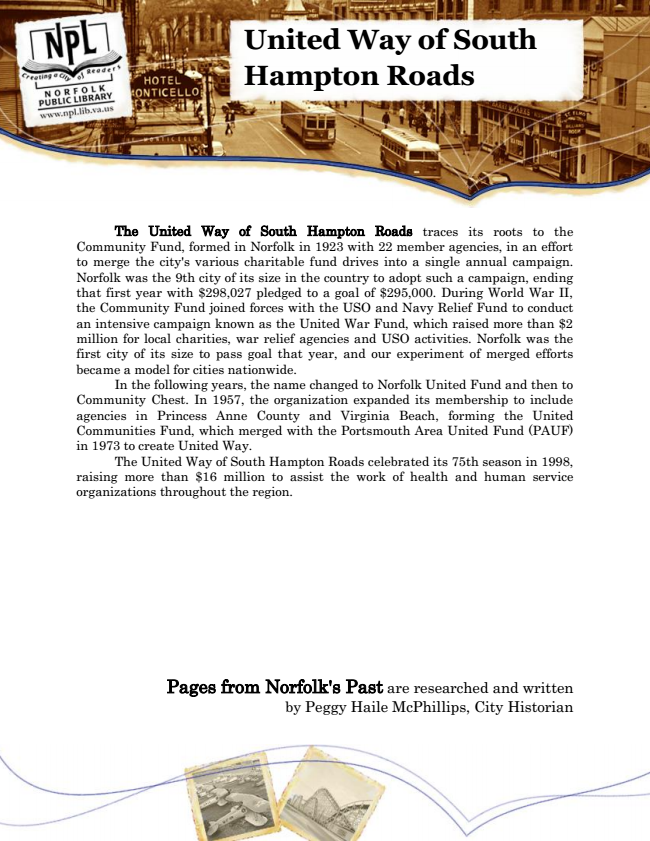

United Way of South Hampton Roads
The United Way of South Hampton Roads traces its roots to the Community Fund, formed in Norfolk in 1923 with 22 member agencies, in an effort to merge the city's various charitable fund drives into a single annual campaign. Norfolk was the 9th city of its size in the country to adopt such a campaign, ending that first year with $298,027 pledged to a goal of $295,000. During World War II, the Community Fund joined forces with the USO and Navy Relief Fund to conduct an intensive campaign known as the United War Fund, which raised more than $2 million for local charities, war relief agencies and USO activities. Norfolk was the first city of its size to pass goal that year, and our experiment of merged efforts became a model for cities nationwide.
In the following years, the name changed to Norfolk United Fund and then to Community Chest. In 1957, the organization expanded its membership to include agencies in Princess Anne County and Virginia Beach, forming the United Communities Fund, which merged with the Portsmouth Area United Fund (PAUF) in 1973 to create United Way.
The United Way of South Hampton Roads celebrated its 75th season in 1998, raising more than $16 million to assist the work of health and human service organizations throughout the region.
Pages from Norfolk's Past are researched and written by Peggy Haile McPhillips, City Historian